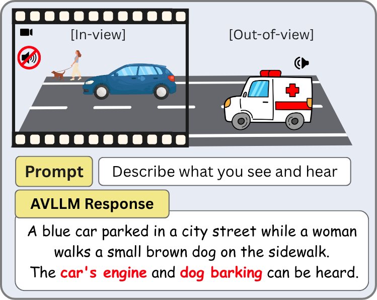
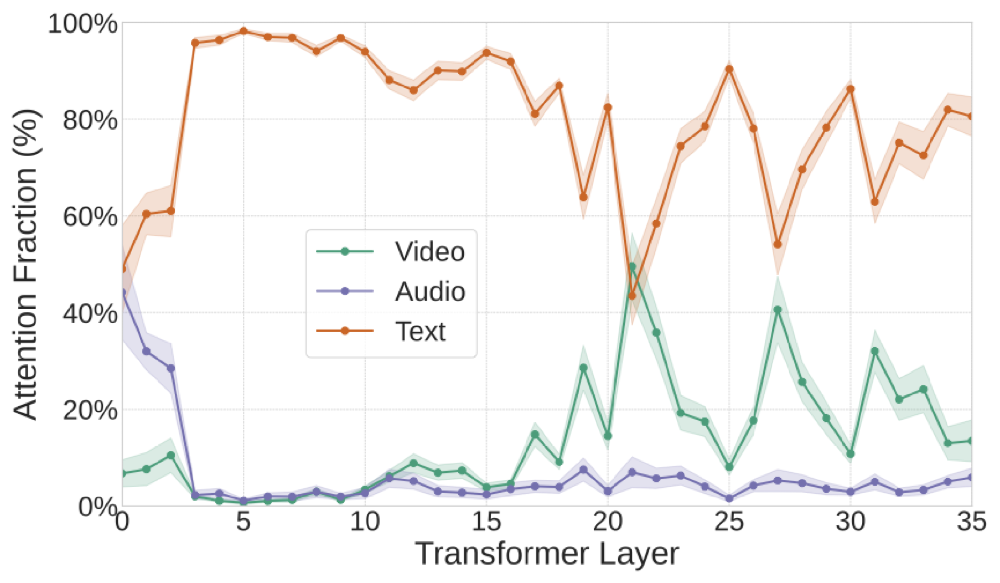
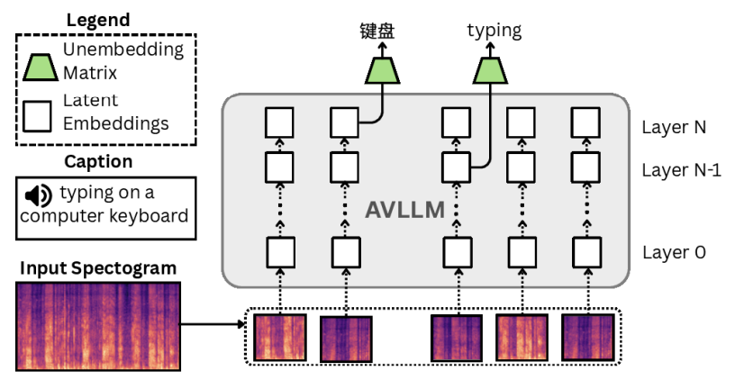
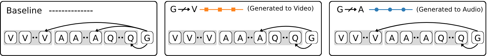
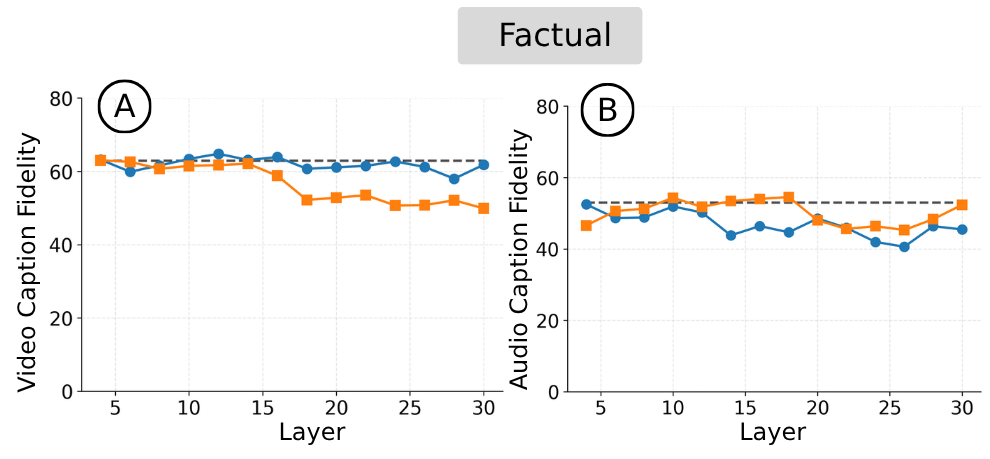
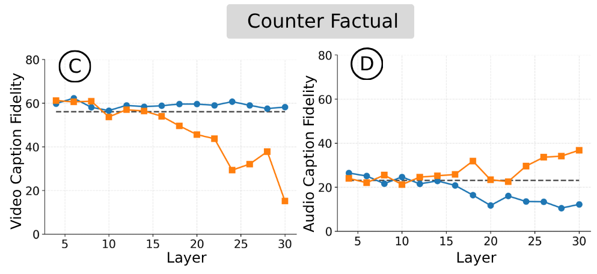
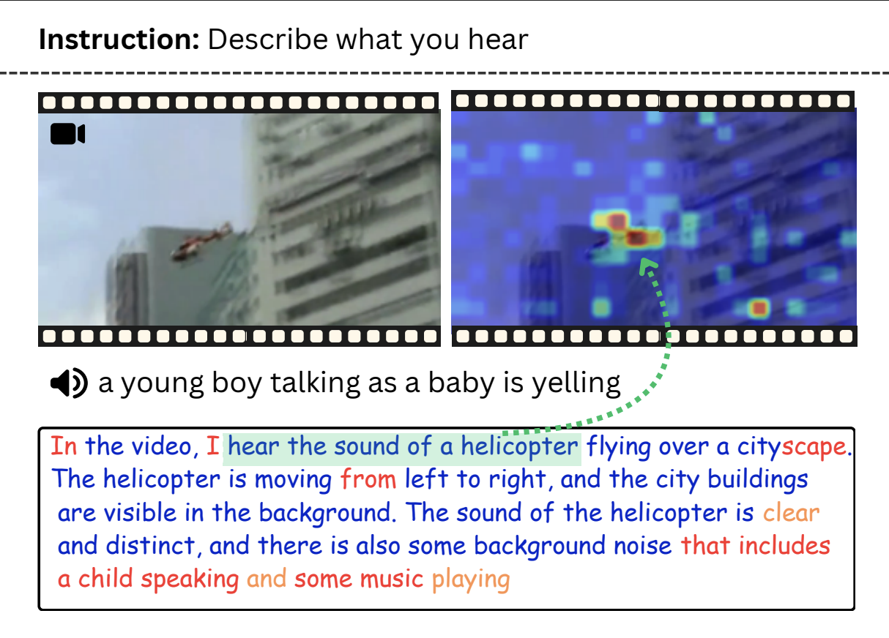
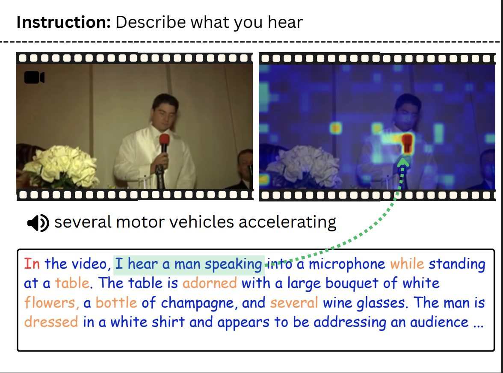

Do Audio-Visual Large Language Models Really See and Hear?

AVLLMs have made remarkable progress in jointly understanding audio and visual inputs. But how they actually process and use these modalities internally remains a black box, and this opacity has real consequences.
To see why this matters, consider the safety-critical setting shown in Figure 1: an autonomous vehicle should respond to an off-screen ambulance siren even when it isn't visible. Current AVLLMs would likely fail here, when we stress-test them on scenarios where audio and visual content conflict, they hallucinate sounds from visible objects and miss the actual audio entirely. They have a bias to see, then guess what they should be hearing.
Some Qualitative Examples
Below we show how different AVLLMs hallucinate audio from visual content. Select a model to see its audio-visual captions for factual video (which contains the original audio) and counterfactual video (with swapped audio)
How We Study This
Task: We ask AVLLMs to describe what they see and hear, a simple task, but one that directly forces the model to use both modalities. And unlike multiple choice or binary QA, free-form captions are interpretable.
Dataset: In natural videos, audio and visual content are correlated, so vision can confound audio understanding, i.e., the model can infer sounds just from what it sees. To prevent this, we construct counterfactual samples by swapping a video's audio with a semantically unrelated track. We curate 500 samples from AudioCaps, half factual, half counterfactual.
Evaluation: Evaluating free-form captions at scale is hard. We use an LLM-as-judge that scores audio and video fidelity separately on a 0-1 scale. It is scalable, and has strong correlation with human judgements (ρ = 0.816 audio, ρ = 0.732 video).
Findings
Does the model pay attention to audio?

Before asking why audio fails, a more basic question: does the model even attend to audio tokens during generation, or is it effectively ignoring them from the start? If the model never looks at audio, the hallucinations would be unsurprising it would simply be guessing from vision alone.
To test this, we track the mean attention that generated tokens allocate to each input modality, video tokens, audio tokens, and query text tokens across every transformer layer of the model.
Finding:The model does attend to audio, but only briefly. Audio tokens receive 40-50% of attention in early layers (0-5), then drop to near-zero. Visual attention, by contrast, steadily climbs through deeper layers (15-30), reaching 20-40%.
Are audio representations meaningful?

We've established that the model does attend to audio tokens, albeit briefly. Next, we ask whether those audio tokens actually encode anything meaningful to begin with. If the representations are not meaningful, the visual bias would simply reflect a lack of useful audio signal, not a failure to use it.
To find out, we probe audio representations using the logit lens. This technique decodes hidden states at each audio token position using the model's unembedding matrix, projecting them into probability distributions over the vocabulary. If the representations are meaningful, they should decode into tokens that describe the actual audio content.
Finding: Audio representations decode into interpretable tokens that capture sound sources (drill, engine, keyboard) and actions (typing, neighing), even in multiple languages (键盘/keyboard, 马/horse). Measuring this systematically, the model achieves 61.4% latent audio understanding from its internal representations, yet generated captions hit only 23% audio fidelity on counterfactual samples. The audio understanding is there internally, it just isn't making it to the output.
How does cross-modal information flow?
So the model attends to audio, and encodes meaningful audio semantics internally. But somewhere between those internal representations and the final generated text, audio gets lost. Where exactly does this happen?
To trace this, we use attention knockout, a causal intervention that selectively blocks attention from generated tokens to either audio (G↛A) or video (G↛V) at specific layers. The logic is simple: if blocking a modality at a given layer degrades the output, that modality was actively contributing there.

The setup is illustrated in Figure 4. In the baseline condition, generated tokens (G) can attend to all input tokens, video (V), audio (A), and query (Q). In the G↛V condition (orange), we block the attention pathway from generated tokens to video tokens at a specific layer, forcing the model to rely solely on audio and text. In G↛A (blue), we block attention to audio tokens instead. By sweeping this intervention across layers and measuring how caption fidelity changes, we can pinpoint exactly where each modality contributes to the output.

Factual samples: When we block either modality, the model compensates using the other—performance recovers either way. As we can observe in plots A and B, neither video nor audio caption fidelity degrades significantly when the corresponding modality is blocked. This demonstrates audio-visual complementarity, but also reveals why factual samples alone are insufficient for evaluation. The modalities are so correlated that the model can always lean on one to cover for the other, which is exactly why counterfactuals are necessary.

Counterfactual samples: Here the modalities conflict, so compensation is impossible. In plot C, blocking video (G↛V, orange) causes a clear drop in video understanding concentrated in mid-to-deep layers (15-30)—telling us where visual information transfers to generated text. For audio understanding, blocking audio (G↛A, blue in plot D) produces a similar drop in the same layers, confirming audio transfers there too. But the critical finding is in plot D: blocking video (orange) actually improves audio understanding by ~50%, recovering it to near factual-setting levels. When both modalities compete in those deeper layers, vision is preferred at the cost of audio.
Finding: Both audio and video integrate into generated text in the deeper layers of the network. However, vision takes precedence over audio in this integration stage, and blocking visual pathways in these layers recovers the model's latent audio understanding capabilities.
Where does the vision bias originate?
We know vision dominates in the final layers. But is this because audio training did not sufficiently change the model's behavior to begin with leaving it fundamentally a vision-language model with audio bolted on?
To test this, we compare the output token distributions of Qwen2.5-Omni (the AVLLM, with audio input) against Qwen2.5-VL (its base vision-only model, no audio). For each generated token, we measure whether the AVLLM's prediction shifts away from what the vision-only model would predict. If audio meaningfully influences generation, we should see significant distributional shifts.
The examples below illustrate this. Colors indicate how much each token is influenced by audio, blue tokens are identical to what the vision-only base model would predict, yellow are close, and red reflect genuine audio understanding. We also visualize the attention, to see what the model attends to while generating a particular token.


Finding: The distributions are remarkably similar, KL divergence of just 0.4. Of tokens describing audio events, 66% are unshifted (identical top prediction as the vision-only model), and 85% fall within the vision-only model's top 3 predictions. Notably, when the model does correctly identify audio content, those tokens do shift away from the base LVLM distribution, confirming that genuine audio processing produces distributional shifts. But the model still defaults to its visual priors more often than it should, particularly under conflict.
Citation
@misc{selvakumar2026audiovisuallargelanguagemodels,
title={Do Audio-Visual Large Language Models Really See and Hear?},
author={Ramaneswaran Selvakumar and Kaousheik Jayakumar and S Sakshi and Sreyan Ghosh and Ruohan Gao and Dinesh Manocha},
year={2026},
eprint={2604.02605},
archivePrefix={arXiv},
primaryClass={cs.AI},
url={https://arxiv.org/abs/2604.02605},
}